Overview
A phased array steers its beam by controlling the relative phase of the signal driving each radiating element, rather than by physically rotating a dish. Feed the elements in phase and the beam points straight ahead at boresight; apply a progressive phase shift across the array and the beam tilts instantly and electronically.
This project is a complete small X-band RADAR front end. A custom RF transceiver generates a clean 10.5 GHz carrier, filters and amplifies it, and routes it through a transmit/receive switch into the antenna array. The frequency conversion itself is done by a transverter stage inside that chain, mixing an 8 GHz local oscillator with a 2.5 GHz IF up to 10.5 GHz. The array itself is sixteen microstrip patches driven through four beamformer ICs, which apply the per-element phase shifts that do the steering.
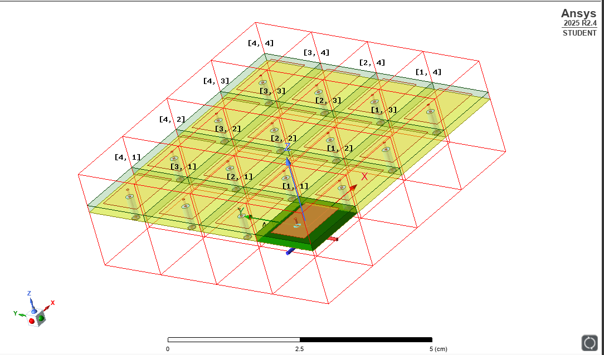
Design Variables
The whole 4×4 array measures just 5.712 × 5.712 cm: four elements on a 1.428 cm pitch in each direction. That is small enough to fit in the palm of your hand.
| Design choice | Value | Why |
|---|---|---|
| Operating frequency f0 | 10.5 GHz | X-band is the practical sweet spot for ground SAR, maritime and weather sensing. Small enough antennas to be portable, but long enough wavelength to behave well in weather. |
| Array dimensions | 4 × 4 | One beamformer IC drives four elements, so 3×3 or 5×5 would waste channels. A square grid steers evenly in both azimuth and elevation, and 16 elements give strong gain and directivity without narrowing the beam so far it becomes hard to use. It is also more affordable to fabricate. |
| Patch dimensions | L = 0.85 cm W = 1.13 cm |
Solved from the standard microstrip patch equations for f0 = 10.5 GHz on a substrate with εR = 3.48 and thickness h = 0.1575 cm (62 mil). |
| Element spacing | dx = dy = 1.428 cm | Spacing must stay at or below λ/2 to avoid grating lobes when steering out to the full ±90°. At 10.5 GHz, λ = 2.86 cm, so half a wavelength is 1.428 cm. |
| Feed method | Coax feed pins | Low loss, well shielded, and modular. The array can be integrated onto the PCB or driven standalone. Holds a 50 Ω impedance over a wide bandwidth. |
| Beamsteering parameters | Theta_Scan, Phi_Scan, ΔΦx, ΔΦy |
Theta_Scan and Phi_Scan set the desired beam direction; ΔΦx and ΔΦy are the per-element phase shifts needed to actually point it there. |
Sizing the patches
Patch width and length come straight out of the transmission-line model. Width is set from the target frequency and substrate permittivity; that width then determines the effective permittivity εeff the wave actually sees, which feeds back into the length calculation along with a fringing-field correction.
Choosing element spacing
Grating lobes are the failure mode that limits how far a phased array can steer. Space the elements too far apart and the array radiates duplicate beams in unwanted directions. The criterion below sets the maximum spacing for a given maximum scan angle. Designing for θmax = 90° drives spacing to λ/2.
Estimating directivity
Before running a single full-wave simulation, this closed-form approximation gives a target to check the results against: directivity scales with the physical aperture of the array measured in wavelengths.
Steering the beam
The phase shift applied to each element is a function of where you want the beam to point and how far apart the elements are. These are the expressions programmed into the beamformer ICs.
Simulation Results
The full array was simulated in ANSYS Electronics Desktop with all sixteen coaxial ports excited. The results below cover impedance match, radiation pattern, element-to-element coupling, and how all of that degrades as the beam steers away from boresight.
Return loss. Is the antenna actually accepting power?
S11 measures how much power injected into a port reflects straight back out. Lower is better: a deep dip means the element is well matched and radiating rather than reflecting.
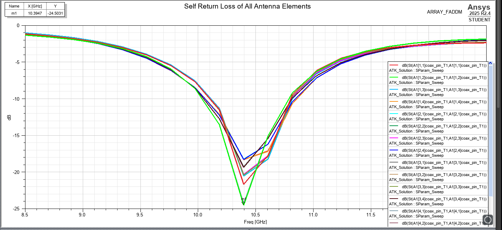
Radiation pattern at boresight
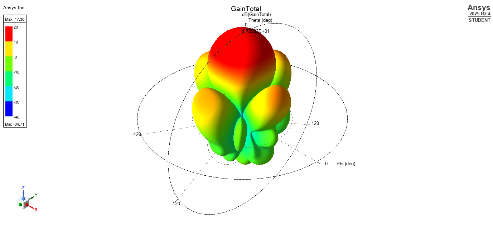
Radiation pattern with the beam steered
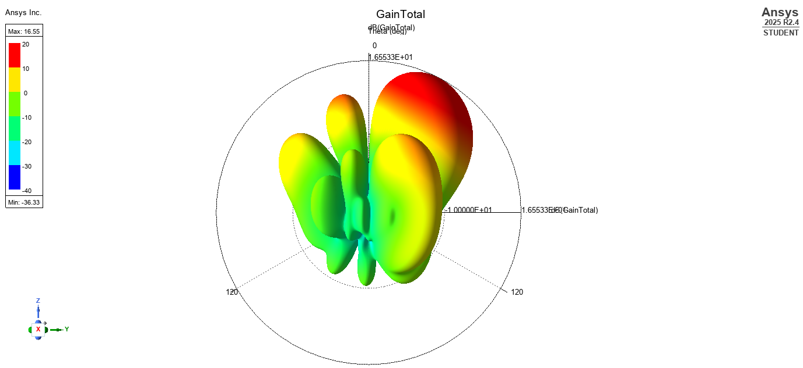
Crosstalk between elements
Neighbouring patches couple to each other through their fringing fields. Too much coupling distorts the pattern and wastes transmit power heating adjacent ports instead of radiating.
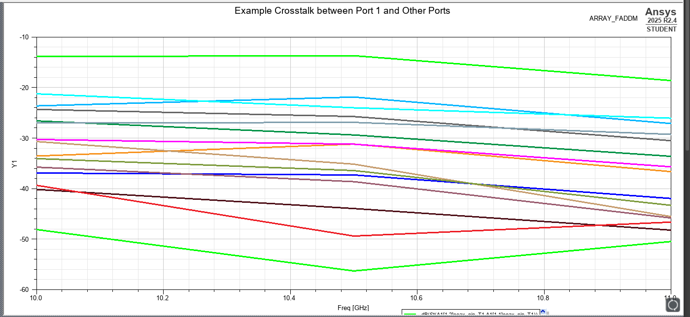
How far can the beam actually steer?
The meaningful limit is where gain falls 3 dB below its boresight peak. RealizedGainTotal is the number to trust here, since it accounts for coupling and the S11 reflections that grow as the match degrades off-axis.
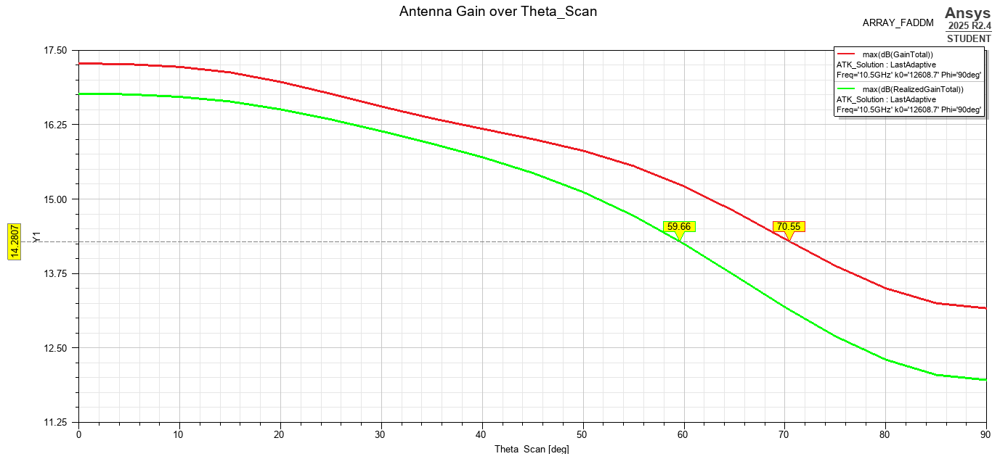
System efficiency across the scan
System efficiency is radiated power over accepted power. How much of what goes in actually leaves the antenna rather than being lost to reflection and coupling.
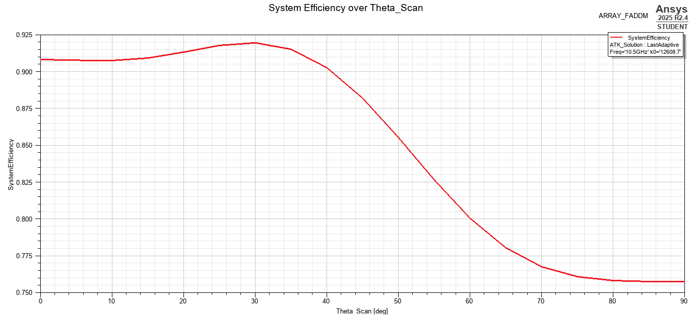
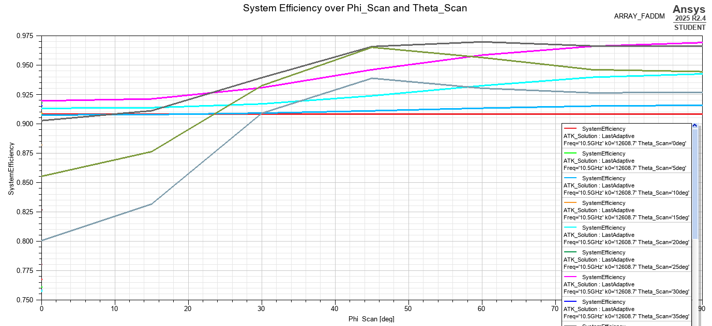
Full beamsteering demonstration
Sweeping the phase increments continuously sweeps the main lobe through space. Nothing physically moves.

RF Front End PCB
The array is fed by a custom RF transceiver board that sits between an ADALM-PLUTO software-defined radio and the antenna elements. On transmit it takes a 2.5 GHz IF from the SDR, converts it up to 10.5 GHz, filters and amplifies it, and distributes it to the four beamformer ICs. On receive it runs the same path in reverse, bringing the 10.5 GHz echo back down to a 2.5 GHz IF for the SDR to digitize.
The local oscillator, its reference clock and the mixer make up the transverter stage: the part that actually does the frequency conversion, mixing an 8 GHz LO with the 2.5 GHz IF. Everything around it filters, amplifies, switches and distributes.
The board layout is now complete, with the final power tree in place and every power trace sized for the current it carries (see the trace-width table below).
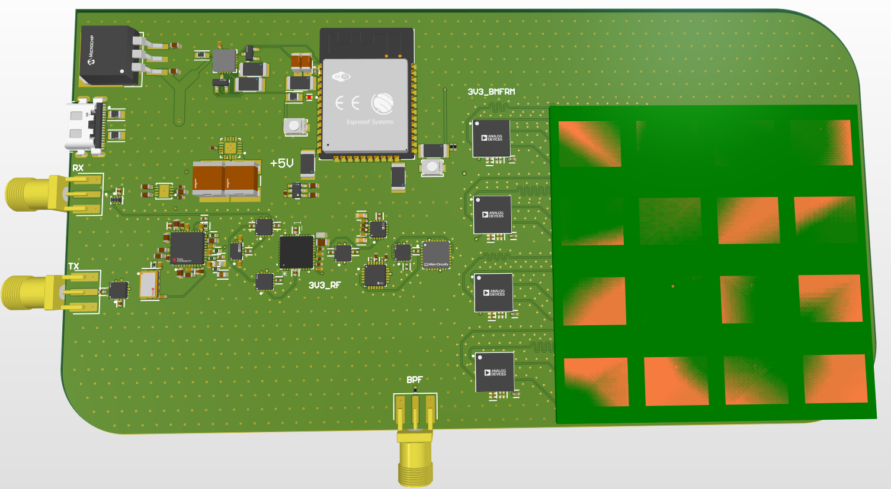
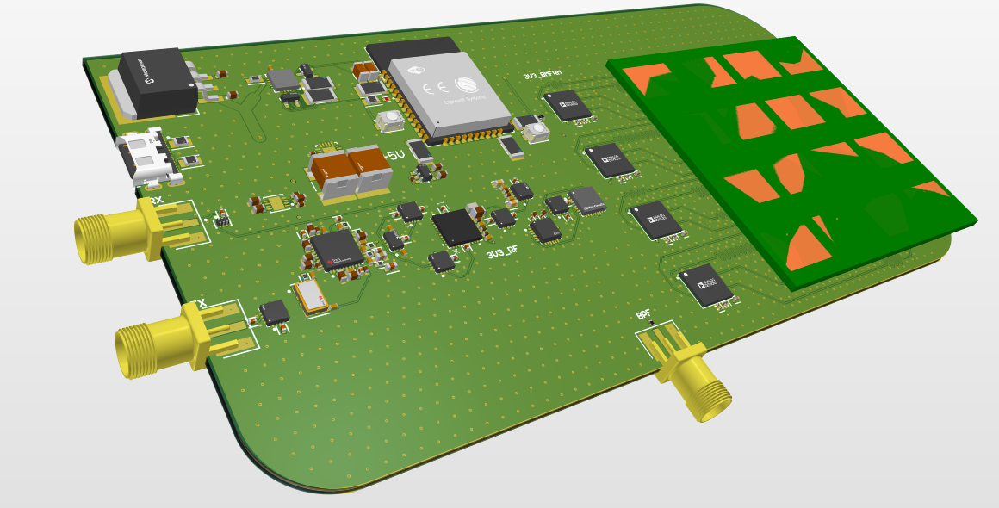
Tunable bandpass filter control
The ADMV8416 bandpass filter is voltage tunable: its center frequency is set by a DC control voltage rather than fixed at layout time. That control voltage comes from an external adjustable DC supply of up to 12 V, which connects through the SMA connector on the bottom edge of the board. Keeping it external means the passband can be trimmed onto 10.5 GHz on the bench, and retuned later without changing the board.
Power tree
Everything on the board runs from a single 5 V, 3 A USB-C input. The board draws 2.39 A at full load, leaving about 0.6 A of headroom. Rather than one shared 3.3 V supply, the board splits the load into separate rails so that noisy circuitry never shares a supply with sensitive RF parts. The four beamformers get their own high-current low-noise regulator, the local oscillator chain gets an ultra-low-noise one, and the ESP32 is isolated on a digital rail. That digital rail also feeds a 10 kΩ / 12 kΩ resistor divider, which sets a 1.8 V logic level on the ADAR1000s’ ADDR0 and ADDR1 pins. Those are CMOS logic inputs rather than supply pins, so they draw essentially no current and a simple divider is all they need. A charge-pump inverter makes the −5 V the bandpass filter needs, and the power amplifier, filter and USB–UART bridge run straight off 5 V.
| Rail | Regulator | Type and key specs | Role |
|---|---|---|---|
| P3V3_BMFRM | TPS7A85Texas Instruments |
Low-noise LDO, 5 V → 3.3 V. 4 A output, 4.4–8.4 µVRMS output noise, 150 mV dropout at 4 A, 1% accuracy over line, load and temperature. | Carries the heaviest load on the board, the four ADAR1000s at 1.4 A, with plenty of headroom and the low noise the beamformers need. |
| P3V3_RF | ADM7150Analog Devices |
Ultra-low-noise LDO, 5 V → 3.3 V. 800 mA output, 1.0 µVRMS integrated noise (100 Hz–100 kHz), PSRR above 90 dB from 1 to 100 kHz. | Feeds the most noise-sensitive parts: the LO synthesizer, TCXO, mixer and LNA, plus the T/R switches. Supply noise here would show up directly as phase noise on the carrier. |
| P3V3_DIG | MCP1827SMicrochip |
LDO, 5 V → 3.3 V. 1.5 A output, low dropout, stable with ceramic output capacitors. | Gives the ESP32 its own digital rail, so its switching current spikes stay off the RF supplies. |
| PM5V | LM2776Texas Instruments |
Switched-capacitor inverter, 5 V → −5 V. 200 mA output, 2.7–5.5 V input, 2 MHz switching, above 90% efficiency, needs only three capacitors and no inductor. | Supplies the negative rail for the bandpass filter, which draws under a milliamp. |
Each rail’s traces were sized for 1.5× its calculated current, within a voltage-drop and temperature-rise budget. The 5 V USB-C input rail is the widest at 60 mil, since it carries the whole board’s 2.39 A.
| Rail | Loads | Current | Design 1.5× | Max ΔV | Max ΔT | Min. trace width |
|---|---|---|---|---|---|---|
| P5V | PA, filter (VDD), FT231X, all regulator inputs | 2.39 A | 3.6 A | 0.05 V | 20 °C | 60 mil |
| P3V3_BMFRM | 4× ADAR1000 (350 mA each) | 1.4 A | 2.1 A | 0.033 V | 10 °C | 50 mil |
| P3V3_RF | LO, mixer, LNA, TCXO, T/R switches | 518 mA | 777 mA | 0.033 V | 10 °C | 25 mil |
| P3V3_DIG | ESP32 | 350 mA | 525 mA | 0.1 V | 10 °C | 15 mil |
| PM5V | Bandpass filter (VEE) | 0.7 mA | 10.5 mA | 0.05 V | 10 °C | 5 mil |
| P1V8 | 4× ADAR1000 ADDR0/ADDR1 (CMOS logic inputs), via 10 kΩ / 12 kΩ divider from P3V3_DIG | ≈0 A | — | — | — | 5 mil |
Transverter stage
| Stage | Part | Function | Gain / Loss |
|---|---|---|---|
| Local oscillator | LMX2592RHATPLL / frequency synthesizer |
Generates the 8 GHz LO that mixes with the 2.5 GHz IF. Runs on 3.3 V and covers 20 MHz–9.8 GHz with 32-bit fractional division. Delivers 49 fs RMS jitter, −134.5 dBc/Hz VCO phase noise at 1 MHz offset, and a −231 dBc/Hz normalized PLL noise floor. | −8.5 dB |
| Reference clock | SIT5358AI-FR-33E0TCXO |
Supplies a stable, temperature-compensated 10 MHz reference to the LO, so the synthesized carrier does not drift with board temperature. 3.3 V. | — |
| Mixer | LTC5548IUDBdouble-balanced passive mixer |
Mixes the 8 GHz LO with the 2.5 GHz IF to produce 10.5 GHz on transmit, and mixes the 10.5 GHz return back down to 2.5 GHz on receive. Double-balanced topology for good port-to-port isolation. | — |
Signal chain
| Stage | Part | Function | Gain / Loss |
|---|---|---|---|
| Bandpass filter | ADMV8416tunable BPF (MMIC) |
Strips the mixer’s unwanted products and leaves only the 10.5 GHz signal. 5 V part with selectable bands. It is voltage tunable: an external adjustable DC supply (up to 12 V) on the bottom-edge SMA connector sets the center frequency, so the passband is tuned on the bench rather than fixed at layout time. | −8 dB |
| Power amplifier | HMC451LC3GaAs PHEMT |
Recovers the conversion and filter loss, since the signal is net negative up to this point, and drives the array at a usable transmit level. Maximum input power +10 dBm. | +19 dB NF 7 dB |
| Low-noise amplifier | HMC564LC4GaAs MMIC LNA |
Adds gain on the receive side while keeping the overall system noise figure low. Covers 6–14 GHz with a P1dB of 13 dBm and a maximum input of +20 dBm. | +17 dB NF 1.8 dB |
| T/R switch | ADRF5019BCPZN |
Switches the shared antenna array between the transmit and receive paths. Rated 100 MHz–13 GHz with a maximum input power of 27 dBm. | −1 dB |
| Splitter / combiner | EP4RKU+Mini-Circuits 4-way, GaAs MMIC |
Splits the transmit signal equally four ways to the beamformer ICs, and combines the four receive paths back into one. DC–18 GHz with a VSWR of 1.4; handles 3.1 W as a splitter and 1.5 W as a combiner. | −10 dB (6 dB is the ideal 4-way split) |
| Beamformer ICs (×4) | ADAR1000Analog Devices 4-channel X/Ku-band beamformer |
Sets the phase and amplitude of every antenna element, which is what actually steers the beam. Each IC drives four elements, so four of them cover the 4×4 array. Covers 8–16 GHz in half-duplex transmit/receive with 360° of phase adjustment at 2.8° resolution. On transmit, gain is variable from 0 to 20 dB at 10.5 GHz and is set so each channel sits at its 10 dBm output P1dB (saturated output is 14 dBm). On receive it provides 21 dB of coherent gain, with an input P1dB of −16 dBm. Programmed by the ESP32 over 4-wire SPI, with memory for 121 prestored beam positions. | TX +19.5 dB (0–20 dB var.) NF 22 dB RX +21 dB NF 8 dB |
| Low-pass filter (RX only) | LFL182G45TC1A108 |
Cleans up the mixer output on receive, passing the 2.5 GHz IF to the SDR and rejecting the higher-frequency mixing products and LO leakage. | −0.37 dB |
Control & interfaces
| Block | Part | Function |
|---|---|---|
| Microcontroller | ESP32-WROOM-32 |
Programs and controls the board over SPI, including the LO synthesizer and the beamformer ICs that set each element’s phase. |
| USB–UART bridge | FT231X |
Converts USB to UART so the ESP32 can be programmed directly over the USB-C port. |
| USB-C connector | CX90B-16PHirose |
5 V, 3 A power input for the whole board, and the ESP32 programming connection through the FT231X. |
| SMA connectors | 50 Ω coax | RF connections to the software-defined radio for the TX and RX IF paths (left edge), plus the bottom-edge SMA that brings in the bandpass filter’s tuning voltage from an external adjustable DC supply of up to 12 V. |
Layer Stackup and RF Routing Choices
The antenna array, RF transceiver and microcontroller subsystems are integrated onto a single, now-complete board in Altium Designer. The stackup is 8 layers, arranged to keep the RF, digital and power domains isolated from each other.
RF routing uses impedance-matched, length-matched grounded coplanar waveguide and symmetrical stripline. Length matching matters more than usual here: the beamformer traces introduce their own phase delays, and any mismatch between channels shows up directly as a pointing error in the steered beam. Symmetrical stripline keeps crosstalk and coupling down between the sixteen closely spaced feed lines.
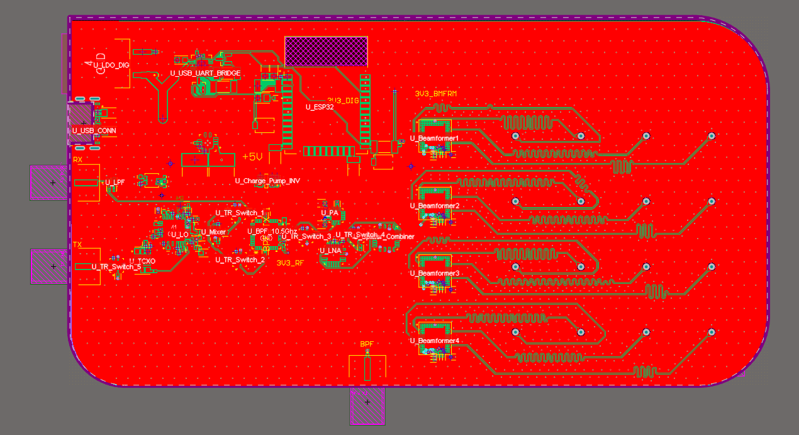
Power Budget Analysis
The power budget follows the signal through every stage in both directions. It confirms that no component is driven past its limits, shows how much margin the receive chain has, and sets the transmit and receive levels that the range analysis below depends on. Both directions share the transverter, bandpass filter, splitter/combiner, beamformers and array, with five T/R switches (about 1 dB of loss each) doing the routing. The transverter only converts in one direction, so switches 5, 1 and 2 steer both the outgoing IF and the incoming echo through it the same way. Further along, switches 3 and 4 send the signal through the power amplifier on transmit and the low-noise amplifier on receive.
Transmit path
The ADALM-PLUTO puts out +3 dBm at the 2.5 GHz IF. The signal loses ground through the transverter, filter and switches, dropping to −17.5 dBm before the power amplifier lifts it back up. That input is far below the PA’s +10 dBm limit. The beamformer gain is then set so each channel lands exactly at the ADAR1000’s 10 dBm output P1dB. That is the most power each element can radiate while staying linear, without pushing toward the 14 dBm saturation point.
| Stage | Gain / loss (dB) | Power after stage | Notes |
|---|---|---|---|
| ADALM-PLUTO SDR (TX) | — | +3 dBm | Source, at the 2.5 GHz IF |
| T/R switch 5 | −1 | +2 dBm | |
| Transverter stage | −8.5 | −6.5 dBm | Up-conversion to 10.5 GHz |
| T/R switch 1 | −1 | −7.5 dBm | |
| T/R switch 2 | −1 | −8.5 dBm | |
| Bandpass filter | −8 | −16.5 dBm | |
| T/R switch 3 | −1 | −17.5 dBm | |
| Power amplifier | +19 | +1.5 dBm | Max input +10 dBm; actual input −17.5 dBm |
| T/R switch 4 | −1 | +0.5 dBm | |
| 1:4 splitter | −10 | −9.5 dBm per line | |
| ADAR1000 beamformer | +19.5 | +10 dBm | Output P1dB of 10 dBm sets the maximum output power |
| Antenna pin | +10 dBm per channel | Net TX gain +7 dB |
Receive path
Assuming an echo of −100 dBm reaches each antenna element, the chain delivers −75.9 dBm to the SDR, a net gain of 24.1 dB with a system noise figure of 8 dB. The minimum usable power at the SDR is set at −80 dBm, which corresponds to an SNR of roughly 13–15 dB over a bandwidth of about 10 MHz, so this echo clears it with about 4 dB to spare. At the other extreme, the ADAR1000’s input P1dB of −16 dBm sets the strongest echo the front end can take without compressing.
| Stage | Gain / loss (dB) | Power after stage | Notes |
|---|---|---|---|
| Antenna pin | −100 dBm | Estimated received echo per element | |
| ADAR1000 beamformer | +21 | −79 dBm | Input P1dB −16 dBm; received power must stay below it |
| 4:1 combiner | +8 | −71 dBm | Coherent combining of the four beamformer outputs |
| T/R switch 4 | −1 | −72 dBm | |
| Low-noise amplifier | +17 | −55 dBm | Max input +20 dBm |
| T/R switch 3 | −1 | −56 dBm | |
| Bandpass filter | −8 | −64 dBm | |
| T/R switch 2 | −1 | −65 dBm | Routes the echo back toward the transverter input |
| T/R switch 5 | −1 | −66 dBm | |
| Transverter stage | −8.5 | −74.5 dBm | Down-conversion to the 2.5 GHz IF |
| T/R switch 1 | −1 | −75.5 dBm | Routes the IF to the RX low-pass filter |
| Low-pass filter | −0.4 | −75.9 dBm | |
| ADALM-PLUTO SDR (RX) | −75.9 dBm | Net RX gain +24.1 dB; above the −80 dBm minimum |
Idealistic Target Range Analysis and Applications
With the transmit power and receive sensitivity fixed by the power budget, the radar range equation gives the farthest distance at which a target of a given radar cross-section (RCS) still returns enough power to detect. This is an idealized free-space estimate. It assumes the full radiated power below, no atmospheric or cable losses, and no extra signal-processing gain.
| Parameter | Per port | Total (16 elements) | Notes |
|---|---|---|---|
| Transmit power | 10 dBm | 22.04 dBm | Sixteen channels add 12.04 dB |
| Antenna gain | — | 17.3 dBi | Simulated boresight gain, used on transmit and receive |
| EIRP | — | 39.34 dBm | Total transmit power plus antenna gain |
| Minimum received power | −100 dBm | −87.96 dBm | Detection threshold used for maximum range |
Here is the total transmit power, the antenna gain, = 2.86 cm at 10.5 GHz, the target’s radar cross-section, and the minimum detectable received power. Because range grows with the fourth root of RCS, a target 10,000 times larger is only detectable 10 times farther away.
| Radar cross-section | Maximum range | Typical target | Application |
|---|---|---|---|
| 0.01 m² | 33 m | Bird | Bird and small-drone detection at short range |
| 1 m² | 104 m | Person | Perimeter security and pedestrian detection |
| 5 m² | 156 m | Intermediate, between a person and a cabin cruiser | Larger slow-moving objects in open areas |
| 10 m² | 186 m | Cabin cruiser | Harbor and near-shore maritime monitoring |
| 100 m² | 330 m | Automobile | Roadside traffic and vehicle detection |
Typical target RCS values are representative microwave figures (Britannica; GlobalSecurity.org). Real targets vary by a factor of 10 to 1,000 depending on the angle they are viewed from.
Where It’s Going
With the layout, power tree and trace-width sizing complete, next steps are sending the board out for fabrication and assembly, then validating the simulated patterns against bench measurements in an anechoic chamber. After that, testing the RF PCB with measurement tools such as VNAs and spectrum analyzers. Then, integrating the array with the transceiver board to characterize the full transmit and receive chain end to end.